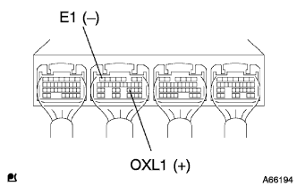
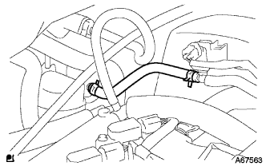
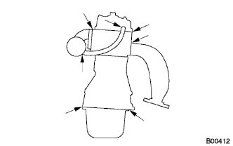

エミッションコントロールシステム 機能点検 |
|  |
エンジンコントロールコンピユータのB23(OXL1)端子にテスターのプラステストリード、B7(E1)端子にマイナステストリードを接続する。
エンジン回転を2500r/minで約2分間保持し、オキシジエンセンサを暖気する。
エンジン回転を2500r/min で保持し、トヨタエレクトリカルテスターの指示が0-1V間で変化(フィードバック)することを確認する。
エンジン回転数を約3500r/minにする。
サウンドスコープを使用して、インジエクタの作動音を確認する。
スロツトルレバーを離したとき、インジエクタの作動音が一時止まり、再度作動音がすることを確認する。
TaSCANをDLC3に接続する。
|  |
エンジン始動後、図のバキユームホースを切り離す。
画面操作に従って操作を行い、[アクティブテスト]-[パージVSV]を選択し、VSVをONにしたとき、VSVのポートに負圧が発生することを確認する。
点検結果が異常な場合は下記項目を点検する。
VSV(キャニスターパージ用)
バキユームホースのつまり(スロツトルボデー←→VSV)
エンジンコントロールコンピユータPRG電圧
[アクティブテスト]を終了し、バキユームホースを復元する。
画面表示に従って操作を行ない、[データモニター]または[データ記録]画面を表示させ、パージVSVの作動状態が確認できるように[パージVSV]を選択する。
車両を完全暖機後十分に加減速走行させ、VSVが[OFF←→ON]になることを確認する。
|  |
ひび割れ、漏れ、または傷がないかを点検する。